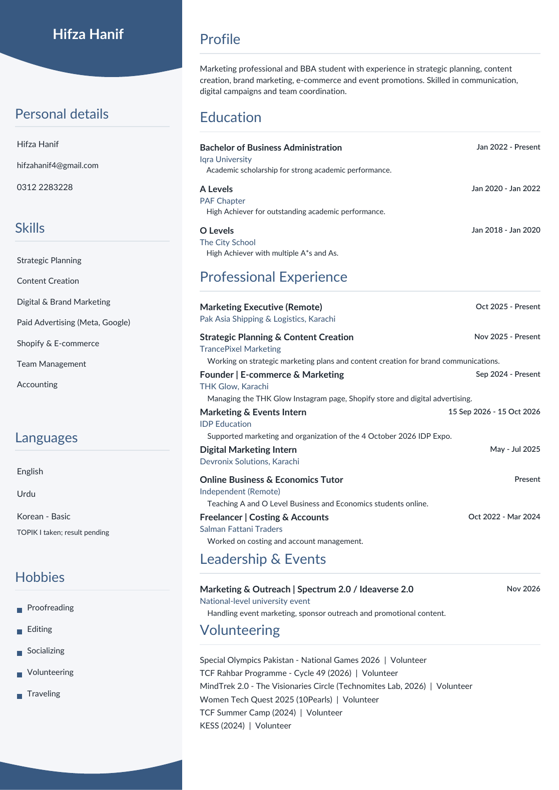

PROFESSIONAL PROFILE / 2026
Curriculum vitae
View the original CV here, or download the PDF.
Download PDF ↓
Read accessible text version
Hifza Hanif Profile
Marketing professional and BBA student with experience in strategic planning, content
creation, brand marketing, e-commerce and event promotions. Skilled in communication,
digital campaigns and team coordination.
Personal details Education
Hifza Hanif Bachelor of Business Administration Jan 2022 - Present
Iqra University
hifzahanif4@gmail.com
Academic scholarship for strong academic performance.
0312 2283228 A Levels Jan 2020 - Jan 2022
PAF Chapter
High Achiever for outstanding academic performance.
Skills O Levels Jan 2018 - Jan 2020
The City School
High Achiever with multiple A*s and As.
Strategic Planning
Content Creation Professional Experience
Digital & Brand Marketing
Marketing Executive (Remote) Oct 2025 - Present
Paid Advertising (Meta, Google) Pak Asia Shipping & Logistics, Karachi
Strategic Planning & Content Creation Nov 2025 - Present
Shopify & E-commerce
TrancePixel Marketing
Team Management Working on strategic marketing plans and content creation for brand communications.
Founder | E-commerce & Marketing Sep 2024 - Present
Accounting THK Glow, Karachi
Managing the THK Glow Instagram page, Shopify store and digital advertising.
Marketing & Events Intern 15 Sep 2026 - 15 Oct 2026
IDP Education
Languages Supported marketing and organization of the 4 October 2026 IDP Expo.
Digital Marketing Intern May - Jul 2025
Devronix Solutions, Karachi
English
Online Business & Economics Tutor Present
Urdu Independent (Remote)
Teaching A and O Level Business and Economics students online.
Korean - Basic Freelancer | Costing & Accounts Oct 2022 - Mar 2024
TOPIK I taken; result pending Salman Fattani Traders
Worked on costing and account management.
Leadership & Events
Hobbies
Marketing & Outreach | Spectrum 2.0 / Ideaverse 2.0 Nov 2026
National-level university event
Proofreading
Handling event marketing, sponsor outreach and promotional content.
Editing Volunteering
Socializing
Special Olympics Pakistan - National Games 2026 | Volunteer
Volunteering TCF Rahbar Programme - Cycle 49 (2026) | Volunteer
MindTrek 2.0 - The Visionaries Circle (Technomites Lab, 2026) | Volunteer
Traveling
Women Tech Quest 2025 (10Pearls) | Volunteer
TCF Summer Camp (2024) | Volunteer
KESS (2024) | Volunteer